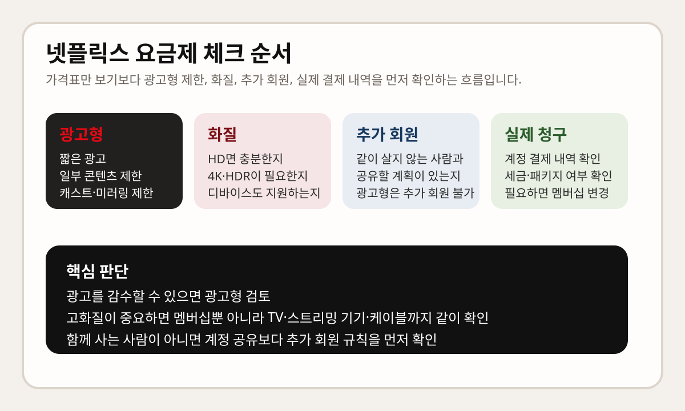

넷플릭스 요금제를 찾을 때 많은 사람이 가장 먼저 보는 건 월 요금입니다. 그런데 실제로는 광고형에서 감수해야 하는 제한, 내 디바이스가 원하는 화질을 지원하는지, 가구 밖 사람과 함께 쓰려면 추가 회원이 필요한지를 먼저 확인해야 요금제를 잘 고를 수 있습니다.
이 글은 2026년 3월 19일 기준 넷플릭스 고객센터 공식 문서를 바탕으로, 가격표를 외우기보다 어떤 기준으로 요금제를 골라야 덜 헷갈리는지 정리한 안내문입니다. 실제 청구 금액은 계정과 거주 국가, 세금, 패키지 결제 여부에 따라 달라질 수 있으니, 마지막에는 반드시 계정의 결제 내역을 다시 확인해야 합니다.

가격표보다 먼저 볼 4가지
- 광고형 제한: 광고가 어느 정도 나오는지, 일부 콘텐츠 제한이 있는지
- 디바이스 호환성: 광고형이 내 TV나 스트리밍 디바이스에서 되는지
- 화질과 시청 환경: HD면 충분한지, 4K/HDR이 필요한지
- 추가 회원 필요 여부: 함께 사는 사람이 아닌 사람과 공유할 계획이 있는지
이 네 가지를 먼저 보면 요금제 선택이 단순한 “최저가 찾기”가 아니라 내 시청 방식에 맞는 조합 찾기로 바뀝니다.
광고형이 맞는 경우와 안 맞는 경우
넷플릭스 고객센터의 넷플릭스 내 광고 문서를 보면, 광고형 경험에서는 대부분의 시리즈와 영화에 광고 브레이크가 포함되고, 라이선스 제한 때문에 일부 콘텐츠는 자물쇠 아이콘과 함께 시청할 수 없을 수 있다고 안내합니다. 또한 광고는 한 시간마다 몇 편 되지 않는 짧은 광고가 표시될 수 있고, 광고 구간은 건너뛰거나 빨리 감을 수 없습니다.
그래서 광고형은 가격이 가장 중요하고 광고를 감수할 수 있는 사람에게 맞습니다. 반대로 광고 없이 몰아보고 싶거나, 보고 싶은 작품 제한에 민감한 사람이라면 처음부터 광고형이 맞지 않을 수 있습니다.
광고형은 디바이스 호환성도 같이 봐야 합니다
넷플릭스 고객센터의 광고형 멤버십 경험 호환성 문서에는, 일부 디바이스는 광고형을 지원하지 않을 수 있고, TV 또는 TV 스트리밍 디바이스에서 고객 지원 > 멤버십 호환성으로 확인할 수 있다고 나와 있습니다.
또 중요한 점이 하나 더 있습니다. 고객센터는 광고형 경험을 이용하는 회원은 모바일 디바이스에서 재생 중인 콘텐츠를 TV로 캐스트하거나 미러링할 수 없다고 안내합니다. 즉, 광고형을 고려한다면 내가 어떤 화면으로 시청하는지부터 먼저 확인하는 편이 안전합니다.
화질은 멤버십만이 아니라 디바이스까지 같이 맞아야 합니다
넷플릭스 고객센터의 최상의 영상 화질로 스트리밍하는 방법 문서를 보면, 먼저 이용 중인 멤버십이 원하는 화질을 지원하는지를 확인하라고 안내합니다. 특히 프리미엄으로 4K나 HDR을 기대하는 경우에는 TV, 스트리밍 스틱, 오디오 수신기, 케이블, 포트까지 모두 그 화질을 지원해야 한다고 설명합니다.
즉, 넷플릭스 요금제를 바꿔도 내 디바이스나 연결 환경이 받쳐주지 않으면 체감이 생각보다 크지 않을 수 있습니다. 반대로 작은 화면으로 주로 보는 사람이라면 상위 요금제가 꼭 필요한 것은 아닐 수 있습니다.
계정 공유보다 추가 회원이 필요한지 먼저 보세요
넷플릭스 고객센터의 넷플릭스 계정 공유 문서는 가구 구성원이 아닌 사람과는 계정을 공유할 수 없다고 설명합니다. 함께 거주하지 않는 사람과 넷플릭스를 쓰려면 본인 계정을 만들거나 추가 회원 구조를 봐야 합니다.
같은 문서 기준으로 많은 국가에서 스탠다드 또는 프리미엄 멤버십 이용자는 추가 회원을 등록할 수 있지만, 광고형 멤버십에서는 추가 회원을 등록할 수 없습니다. 추가 회원 도움말에서는 계정 소유자와 같은 국가에 있어야 하고, 광고 포함 추가 회원은 1080p(풀 HD), 한 번에 1대 디바이스, 월 15개 저장 같은 제한이 있다고 설명합니다.
그래서 혼자 볼지, 같이 살지 않는 가족이나 지인과 함께 볼지에 따라 적합한 요금제가 달라집니다. 이 부분을 먼저 정하면 광고형과 스탠다드, 프리미엄 사이 선택이 훨씬 쉬워집니다.
실제 요금은 어디서 확인해야 하나요?
넷플릭스 고객센터의 청구 및 결제 문서에는 멤버십 요금과 관련 세금이 계정 페이지의 결제 내역에 표시되고, 거주 지역에 따라 세금 포함 금액도 볼 수 있다고 안내합니다. 또 고객센터는 언제든지 멤버십 및 요금을 비교하고 멤버십을 변경할 수 있다고 설명합니다.
즉, 검색 결과에 떠 있는 오래된 가격표보다 내 계정의 결제 내역과 현재 멤버십 비교 화면이 가장 정확합니다. 특히 패키지 결제나 프로모션, 세금이 섞이면 체감 금액이 달라질 수 있으니 마지막 확인은 계정에서 하는 편이 맞습니다.
한 번에 요약하면
- 광고를 감수할 수 있으면 광고형을 검토한다
- 광고형은 일부 콘텐츠 제한, 호환성 제한, 캐스트·미러링 제한을 같이 본다
- 좋은 화질을 원하면 멤버십뿐 아니라 디바이스와 케이블 환경도 같이 맞아야 한다
- 가구 밖 사람과 함께 보려면 추가 회원 가능 여부를 먼저 본다
- 실제 요금은 검색 결과보다 계정의 결제 내역이 가장 정확하다
자주 묻는 질문
Q. 넷플릭스는 가장 싼 요금제만 고르면 되나요?
아닙니다. 광고형은 광고 브레이크, 일부 콘텐츠 제한, 디바이스 호환성 문제를 함께 봐야 해서 사용 패턴에 따라 만족도가 크게 달라집니다.
Q. 프리미엄이면 무조건 4K가 잘 나오나요?
그렇지 않습니다. 넷플릭스 고객센터 기준으로는 멤버십뿐 아니라 TV, 스트리밍 디바이스, 케이블, 포트까지 4K/HDR을 지원해야 합니다.
Q. 광고형으로도 추가 회원을 붙일 수 있나요?
넷플릭스 고객센터 안내 기준으로 광고형 멤버십에서는 추가 회원을 등록할 수 없습니다.